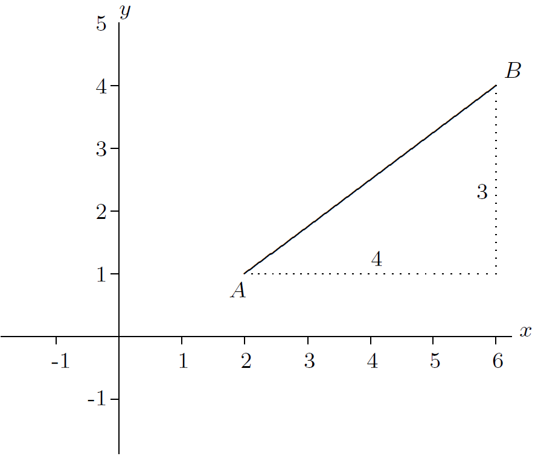
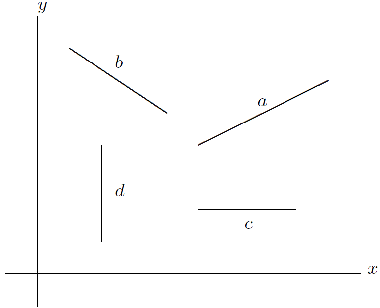
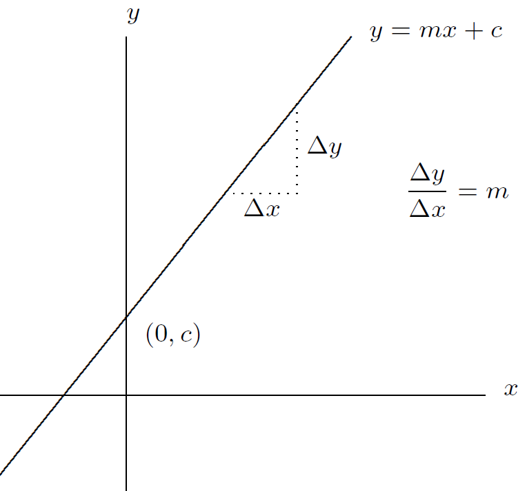
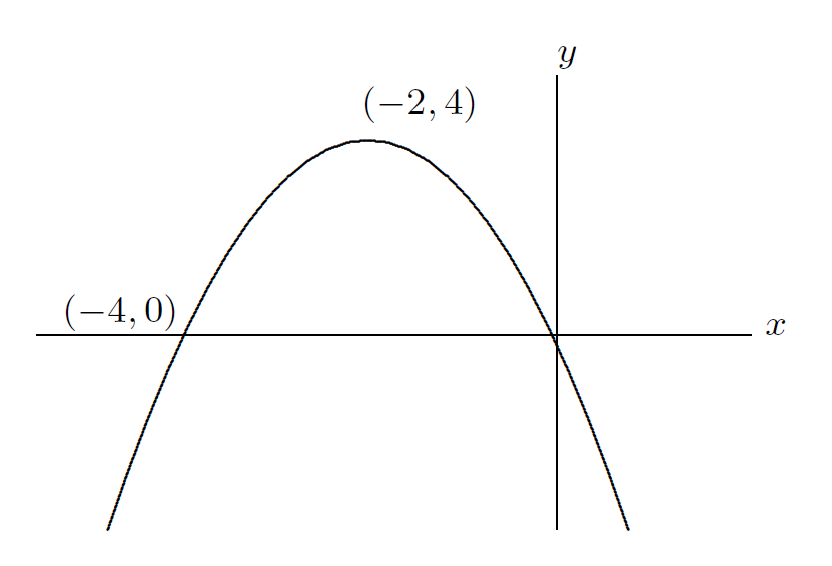
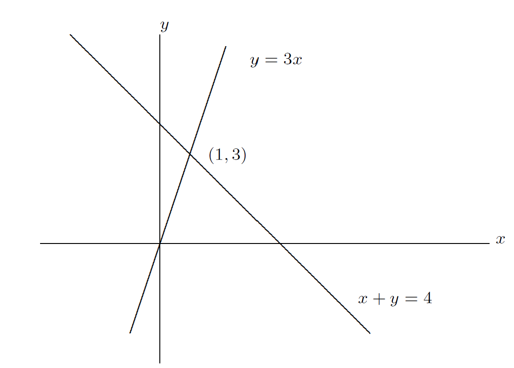
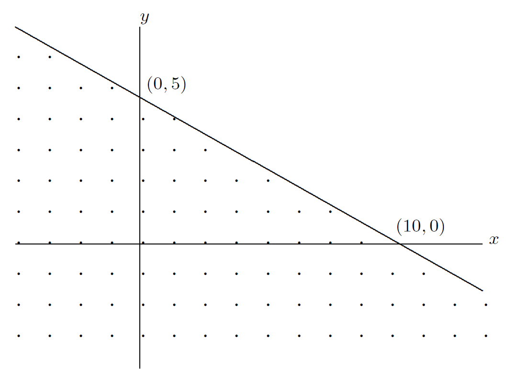
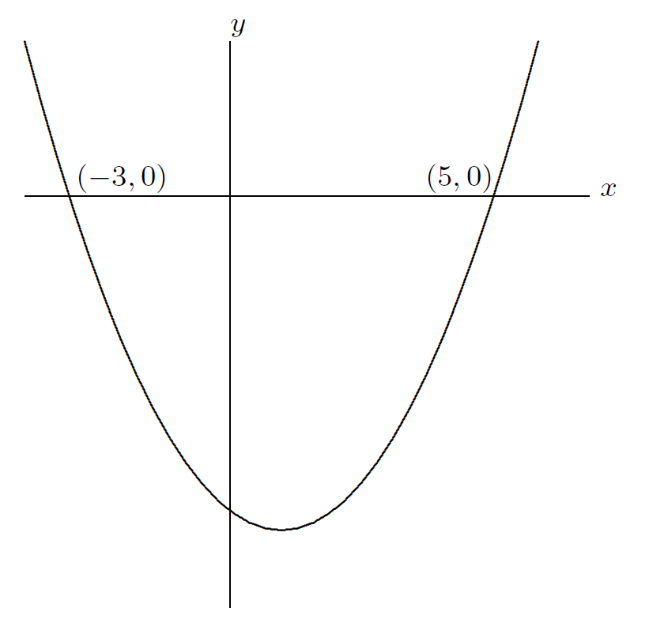
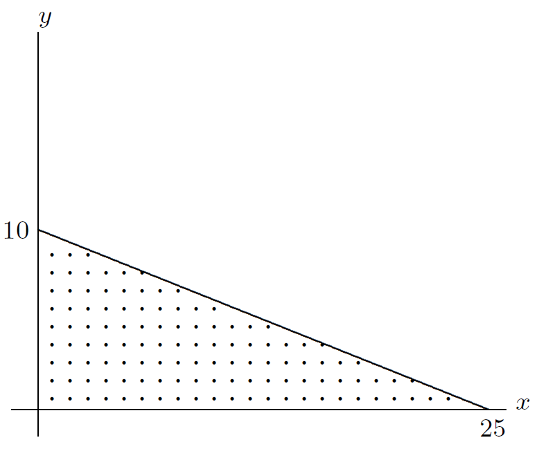
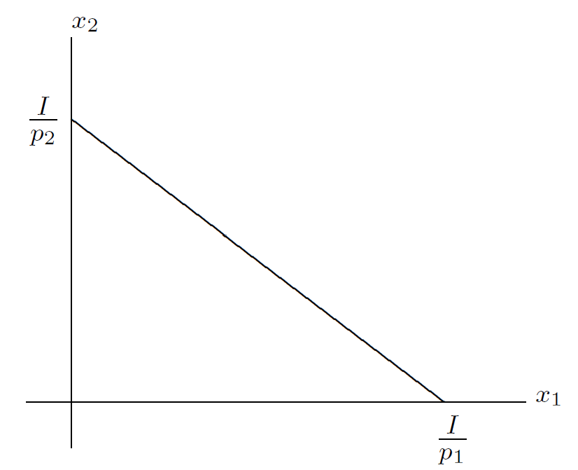

ECN119: Mathematical Methods for Economics
Refresher Material
School of Economics
The University of Sheffield
1 / 20
A Review of Algebra
Outline
- Powers/Indices
- Logarithms
- Solving Equations
- Simultaneous Equations
- Inequalities
- Absolute Value
- Lines and Graphs
Reading
Renshaw Chapters 2, 3, 4, 11, and Sections 5.10-5.12
2 / 20
Indices
Rules of Indices
If \(n\) is a positive integer and \(a\) is a real number, then
\begin{align}
a^m \times a^n &= a^{m+n} \\
\frac{a^m}{a^n} &= a^{m-n} \\
(a^m)^n &= a^{m \times n}
\end{align}
\(a^n\) also has a meaning when \(n\) is zero, or negative, or a fraction
\begin{align}
a^0 &= 1 \quad (if \, a \neq 0) \\
a^{-n} &= \frac{1}{a^n} \\
a^{\frac{1}{n}} &= \sqrt[n]{a} \\
a^{\frac{m}{n}} &= (\sqrt[n]{a})^m = \sqrt[n]{a^m}
\end{align}
There are two other useful rules, which may seem obvious to you:
\begin{align}
a^n \times b^n &= (ab)^{n} \\
\frac{a^n}{b^n} &= \left(\frac{a}{b}\right)^{n}
\end{align}
Important Note
\((a+b)^n \neq a^n + b^n\)
3 / 20
Logarithms
To define a logarithm we first choose a particular base: take any positive integer, \(a\). Now take any positive number, \(x\).
The logarithm of \(x\) to the base \(a\) is:
the power of \(a\) that is equal to \(x\).
If \(x = a^n\) then \(\log_a x = n\)
Rules of Logarithms
The rules for logarithms are derived from the rules for indices
\begin{align}
\log_a xy &= \log_a x + \log_a y \\
\log_a \frac{x}{y} &= \log_a x - \log_a y \\
\log_a x^b &= b \log_a x \\
\log_a a &= 1 \\
\log_a 1 &= 0
\end{align}
4 / 20
Solving Equations
Equations Involving Parameters
Suppose \(x\) satisfies the equation: \(5(x - a) = 3x + 1\)
Here \(a\) is a parameter: a letter representing an unspecified number. The solution of the equation will depend on the value of \(a\).
Without knowing the value of \(a\), we can still solve the equation for \(x\), to find out exactly how \(x\) depends on \(a\):
\begin{align}
5(x - a) &= 3x + 1 \\
x &=
\end{align}
Changing the Subject of a Formula
\(V = \pi r^2 h\) is the formula for the volume of a cylinder with radius \(r\) and height \(h\) - so if you know \(r\) and \(h\), you can calculate \(V\). We could rearrange the formula to make \(r\) the subject:
\begin{align}
V &= \pi r^2 h \\
r &=
\end{align}
5 / 20
Quadratic Equations
Quadratic Equations
Consider the following quadratic equation
\[ax^2 + bx + c = 0\]
where \(a\), \(b\), and \(c\) are numbers and \(a \neq 0\). The solutions (roots) are given by:
The Quadratic Formula: \(x = \frac{-b \pm \sqrt{b^2-4ac}}{2a}\)
The discriminant of this quadratic is \(D = b^2 - 4ac\). If \(D\) is positive, the quadratic has two roots; if \(D\) is zero, the quadratic has one root; if \(D\) is negative, the quadratic has no roots.
6 / 20
Equations with Indices and Logarithms
Equations Involving Indices
Consider the following equation
\[7^{2x+1} = 8\]
To solve this equation we need to take the logarithm of both sides:
\begin{align}
\log_{10}(7^{2x+1}) &= \log_{10} 8 \\
\end{align}
Equations Involving Logarithms
To solve an equation involving logarithms, consider the definition of a logarithm.
For example, solve:
\begin{align}
\log_5(3x-2) &= 2 \\
\end{align}
7 / 20
Simultaneous Equations
Suppose we have two equations and two variables
\begin{align}
x + y &= 20 \tag{S1} \\
3x - 2y &= -5 \tag{S2}
\end{align}
There are lots of pairs of numbers \(x\) and \(y\) that satisfy (S1) or (S2) independently, but just one pair of \(x\) and \(y\) that satisfy both equations simultaneously! To solve a pair of simultaneous equations one can use two methods.
Method 1: Substitution
Make one variable the subject of one of the equations (it does not matter which), and substitute it in the other equation.
Method 2: Elimination
Rearrange the equations so that you can add or subtract them to eliminate one of the variables.
8 / 20
Inequalities
When manipulating inequalities you can add anything to both sides, or subtract anything, and you can multiply or divide both sides by a positive number.
But if you multiply or divide both sides by a negative number you must reverse the inequality sign.
Quadratic Inequalities
- Find the roots of the quadratic;
- Determine the sign of the quadratic on either side of each root.
For example, solve the following inequality:
\begin{align}
x^2 - 8x + 12 &< 0 \\
\end{align}
9 / 20
Absolute Value
The absolute value, or modulus, of \(x\) is the positive number which has the same "magnitude" as \(x\). It is denoted by \(|x|\).
\begin{align}
|x| &= x \quad \text{if } x \geq 0 \\
|x| &= -x \quad \text{if } x < 0
\end{align}
For example, if \(x = -6\), then \(|x| = 6\), and if \(y = 7\), then \(|y| = 7\).
Solving Equations and Inequalities Involving Absolute Values
10 / 20
Lines and Graphs
The Gradient of a Line
When you move from A to B, the change in the \(x\)-coordinate is
\[\Delta x = 6 - 2 = 4\]
and the change in the \(y\)-coordinate is
\[\Delta y = 4 - 1 = 3\]
The gradient (or slope) of AB is \(\Delta y\) divided by \(\Delta x\):
\[Gradient = \frac{\Delta y}{\Delta x} = \frac{3}{4} = 0.75\]

Graph showing points A(2,1) and B(6,4) with line connecting them
There is a general formula:
The gradient of the line joining \((x_1, y_1)\) and \((x_2, y_2)\) is:
\[\frac{\Delta y}{\Delta x} = \frac{y_2 - y_1}{x_2 - x_1}\]
11 / 20
Different Types of Gradients
The gradient of line \(a\) is positive.
The gradient of \(b\) is negative.
The gradient of \(c\) is zero.
The gradient of \(d\) is infinite.

Graph showing four lines with different gradients: a - positive slope, b - negative slope, c - horizontal line, d - vertical line
12 / 20
Straight Line Graphs
If an equation can be written in the form
\(y = mx + c\)
then the graph is a straight line, with gradient \(m\) and vertical intercept \(c\).
We say "\(y\) is a linear function of \(x\)".

Graph showing a straight line y = mx + c with gradient m and y-intercept c labeled
13 / 20
The Equation of a Line
The equation of a line with gradient \(m\), passing through the point \((x_1, y_1)\) is
\(y = m(x - x_1) + y_1\)
Example
Find the equation of the line passing through (2,0) and (8,-1):
14 / 20
Quadratic Graphs
If we can write a relationship between \(x\) and \(y\) so that \(y\) is equal to a quadratic polynomial in \(x\):
\(y = ax^2 + bx + c\)
where \(a\), \(b\), and \(c\) are numbers, then we say
"\(y\) is a quadratic function of \(x\)",
and the graph is a parabola (a U-shape).
If \(a\) (the coefficient of \(x^2\)) is positive, the graph is a U-shape; if \(a\) is negative then it is an inverted U-shape; the vertical intercept is given by \(c\); and the graph is symmetric.
For example:
\[y = -x^2 - 4x\]

Graph showing inverted parabola y = -x² - 4x
15 / 20
Solving Equations using Graphs
The equations:
\begin{align}
x + y &= 4 \\
y &= 3x
\end{align}
could be solved algebraically. Alternatively, we could draw their graphs, and find the point where they intersect.

Graph showing intersection of lines x + y = 4 and y = 3x at point (1,3)
16 / 20
Representing Inequalities using Graphs
If we draw the graph of the line
\[2y + x = 10\]
all the points satisfying
\[2y + x < 10\]
lie on one side of the line.

Graph showing line 2y + x = 10 with shaded region below representing 2y + x < 10
The dotted region shows the inequality \(2y + x < 10\).
17 / 20
Using Graphs to Solve Quadratic Inequalities
To solve the inequality
\[x^2 - 2x - 15 \leq 0\]
sketch the graph of the quadratic polynomial
\[y = x^2 - 2x - 15\]

Graph showing parabola y = x² - 2x - 15 with roots at x = -3 and x = 5, showing where y ≤ 0
18 / 20
Economic Application: Budget Constraint
The Budget Constraint
Suppose that the typical student has a given weekly budget of £50, and that there are only two goods, bread and cheese, with current prices £2 per loaf of bread and £5 per block of cheese. If the student buys \(x\) loaves of bread and \(y\) blocks of cheese, the amount spent is \(2x + 5y\).
Since the maximum amount the student has to spend is £50, her budget constraint is:
\[2x + 5y \leq 50\]
The student's budget set (all the affordable combinations of loaves of bread and blocks of cheese) are given by the dotted area of the diagram.

Graph showing budget constraint 2x + 5y ≤ 50 with feasible region shaded
19 / 20
Economic Application: Budget Constraints - General Case
The General Case
Suppose that a consumer has a choice of two goods, good 1 and good 2. The price of good 1 is \(p_1\) and the price of good 2 is \(p_2\). If she buys \(x_1\) units of good 1, and \(x_2\) units of good 2, the total amount spent is \(p_1x_1 + p_2x_2\).
If the maximum amount she has to spend is her income \(I\), her budget constraint is:
\[p_1x_1 + p_2x_2 \leq I\]
If the consumer spends all her income on good 1 and good 2, the budget constraint holds with equality and is said to be binding.
To draw the budget line, use:
\[p_1x_1 + p_2x_2 = I\]
The gradient of the budget line is:
\[-\frac{p_1}{p_2}\]

Image not found: BC_2.png
Graph showing general budget line p₁x₁ + p₂x₂ = I with intercepts I/p₁ and I/p₂, and slope -p₁/p₂
Graph showing general budget line p₁x₁ + p₂x₂ = I with intercepts I/p₁ and I/p₂, and slope -p₁/p₂
20 / 20
Summary
Key Topics Covered
This refresher material has covered essential mathematical foundations for economics:
- Indices and Logarithms: Rules for manipulation and solving exponential equations
- Equation Solving: Linear, quadratic, and parameter-based equations
- Simultaneous Equations: Substitution and elimination methods
- Inequalities: Including quadratic inequalities and absolute values
- Graphs and Lines: Gradients, intercepts, and geometric interpretation
- Economic Applications: Budget constraints as practical examples
These mathematical tools form the foundation for more advanced topics in economic analysis, including optimization, calculus applications, and mathematical modeling of economic phenomena.